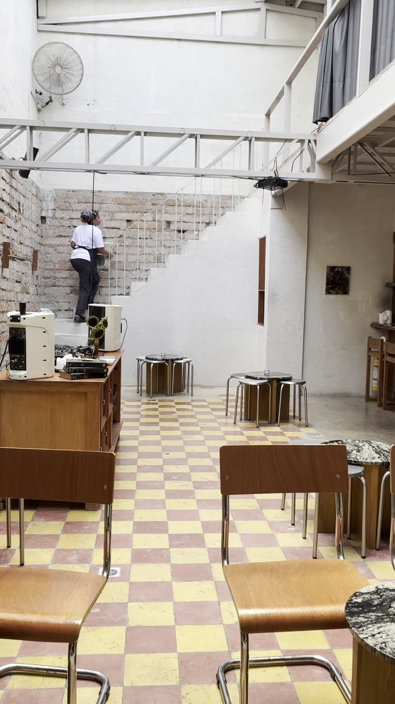
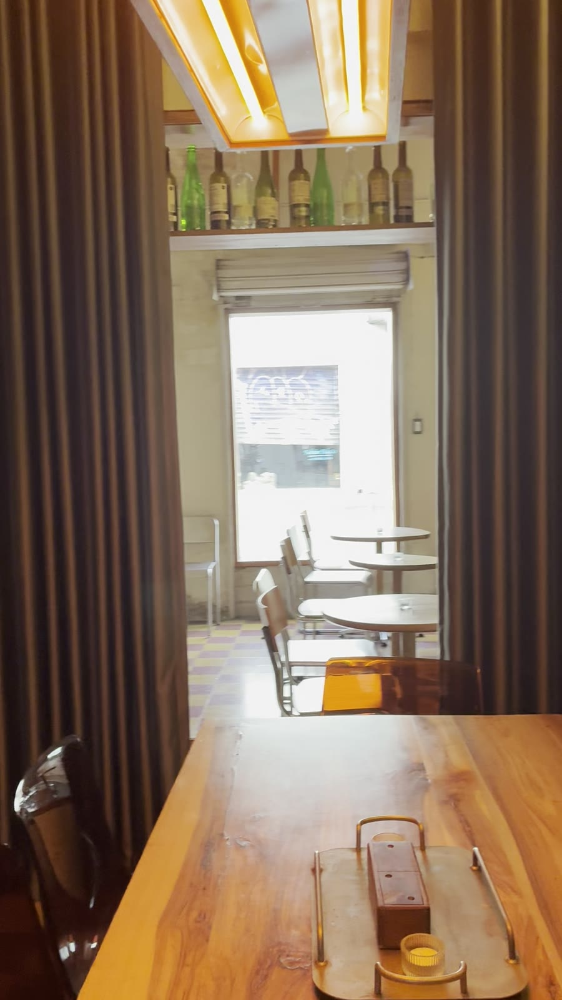

Medellín · 10-31
Sin letrero grande, sin luces. Solo el nombre, en rojo, sobre la pared.
Un patio alto, baldosa de dos colores y la barra al fondo.
Madera larga, botellas en lo alto y la ventana abierta a la calle.
La casa
Una casa vieja de Medellín, pintada de blanco por fuera y llena de luz por dentro. Se entra por una reja, se cruza un patio y se llega a la mesa.


Visítanos
Medellín. El nombre está escrito en rojo sobre la entrada.
Cómo llegarEl número en la puerta